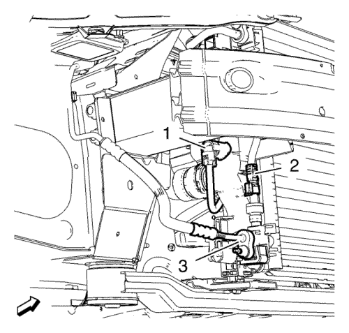
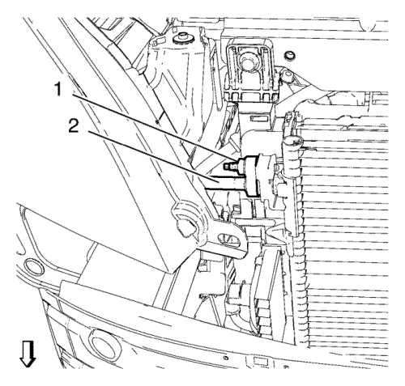
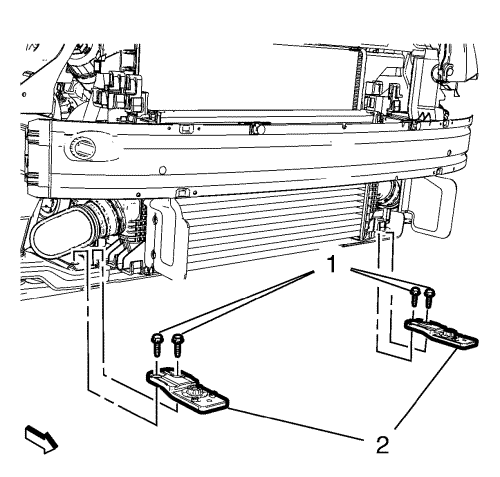
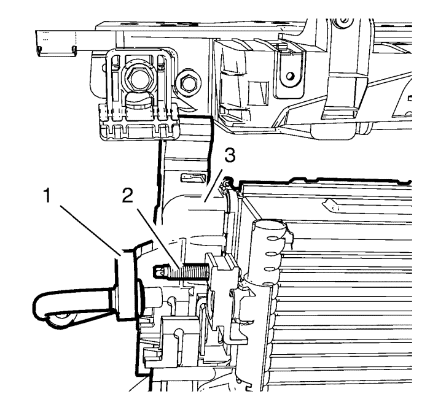
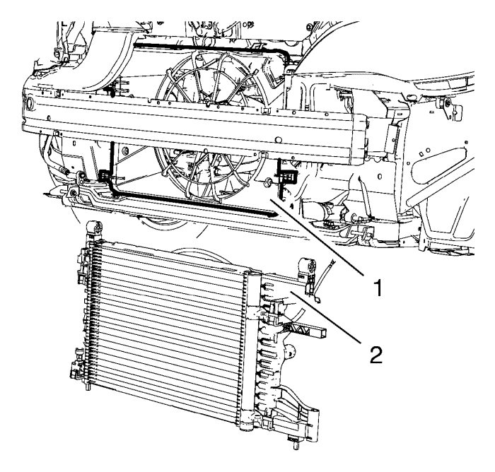
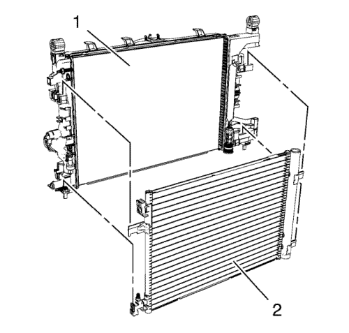

Sustitución del radiador — LDE, LXV, LUW, L2W, 2H0 - MT
Procedimiento de desmontaje
- Abra el capó
- Desconecte el cable negativo de la batería. Consulte Desconexión y conexión del cable negativo de la batería → sin sistema de arranque/parada.
- Desmonte el panel del paragolpes delantero. Consultar Sustitución del panel del parachoques delantero .
- Recubra el agente frigorífico. Consultar Recuperación y recarga del agente frigorífico .
- Vacíe el sistema de refrigeración. Consultar Drenaje y llenado del sistema de refrigeración .
- Desmonte el tubo flexible de salida del radiador del radiador. Consultar Sustitución del tubo flexible de salida del radiador → 2.0L Diésel LNP → LDD, LUH y LUJ → 1.6L LXT, L2W → 2.0L Diésel LLW → LDE, LLU, LXV, 2H0 y LUW .
- Desmonte el tubo flexible de entrada del radiador. Consultar Sustitución del tubo flexible de entrada del radiador → 2.0L Diésel LNP → LDD, LUH y LUJ → 1.6L LXT, L2W → 2.0L Diésel LLW → LDE, LLU, LXV, 2H0 y LUW .
- Elevar el vehículo y soportarlo de manera segura. Consultar Elevación y soporte en alto del vehículo .

- Desmonte el tubo flexible del evaporador del aire acondicionado (3) del condensador.
- Desconecte el enchufe del mazo de cables del sensor de presión del agente frigorífico del aire acondicionado (2).
- Desconecte el enchufe del mazo de cables del sensor de temperatura de refrigerante del motor (1).
- Bajar el vehículo.

- Desmonte la tuerca del tubo flexible del condensador y el compresor de aire acondicionado (1).
- Desmonte el tubo flexible del condensador y el compresor de aire acondicionado (2).
- Desenganche la cubierta del ventilador de refrigeración del motor del radiador y cuélguela a un lado (con abrazaderas de cable por ejemplo).
- Sujete el conjunto del radiador con 2 abrazaderas.

- Desmonte los 4 tornillos del soporte del radiador inferior (1).
- Quite los 2 soportes del radiador inferior (2).

Nota: Serán necesarias dos personas.
- Extraiga el tubo flexible (1) del compresor y el condensador del aire acondicionado del espárrago (2).
| 19.1. | Afloje las 2 abrazaderas. |
| 19.2. | Extraiga el conjunto del radiador (3) hacia la izquierda y después hacia abajo. |

Nota: Serán necesarias dos personas.
Nota: No quite la cubierta (1) del ventilador de refrigeración del motor.
- Desmonte el conjunto del radiador (2).
- Si hubiera algún deflector de aire que estorbara la extracción, extraiga el faro. Consultar Sustitución de los faros .

- Desenganche el condensador (2) del radiador (1).
Procedimiento de montaje
- Enganche el condensador (2) en el radiador (1).
Nota: Serán necesarias dos personas.
- Monte el conjunto del radiador (2).
Nota: Serán necesarias dos personas.
- Instale el tubo flexible (1) del compresor y el condensador del aire acondicionado en el espárrago (2).
| 3.1. | Instale el conjunto del radiador (3) en el radiador hacia arriba y después hacia la derecha. |
| 3.2. | Sujete el conjunto del radiador con 2 abrazaderas. |
- Monte los 2 soportes inferiores del radiador (2).
Precaución:Consulte Precaución con las fijaciones en la sección Prólogo.
- Coloque los 4 pernos del soporte del radiador inferior (1) y apriételos a 22 N·m (16 lib. pie).
- Enganche los clips de la cubierta del ventilador de refrigeración del motor en el radiador.
- Monte el tubo flexible del condensador y el compresor de aire acondicionado (2). Utilice un anillo de junta NUEVO.
Monte la tuerca del tubo flexible del condensador y del compresor del aire acondicionado (1) y apriétela a 19 N·m (14 lib. pie).
- Monte el tubo flexible del evaporador del aire acondicionado (3) en el condensador. Utilice un anillo de junta NUEVO.
- Apriete la tuerca del tubo flexible del evaporador del aire acondicionado a 19 N·m (14 lib. pie).
- Conecte el enchufe del mazo de cables del sensor de presión del agente frigorífico del aire acondicionado (2).
- Conecte el enchufe del mazo de cables del sensor de temperatura de refrigerante del motor (1).
- Bajar el vehículo.
- Monte en el radiador el tubo flexible de entrada al radiador. Consultar Sustitución del tubo flexible de entrada del radiador → 2.0L Diésel LNP → LDD, LUH y LUJ → 1.6L LXT, L2W → 2.0L Diésel LLW → LDE, LLU, LXV, 2H0 y LUW .
- Monte en el radiador el tubo flexible de salida del radiador. Consultar Sustitución del tubo flexible de salida del radiador → 2.0L Diésel LNP → LDD, LUH y LUJ → 1.6L LXT, L2W → 2.0L Diésel LLW → LDE, LLU, LXV, 2H0 y LUW .
- Rellene el agente frigorífico. Consultar Recuperación y recarga del agente frigorífico .
- Si se extrajo el faro. Consultar Sustitución de los faros .
- Rellene el sistema de refrigeración. Consultar Drenaje y llenado del sistema de refrigeración .
- Monte el panel del parachoques delantero. Consultar Sustitución del panel del parachoques delantero .
- Conecte el cable negativo de la batería. Consulte Desconexión y conexión del cable negativo de la batería → sin sistema de arranque/parada.
- Cierre el capó
| © Copyright Chevrolet. All rights reserved |